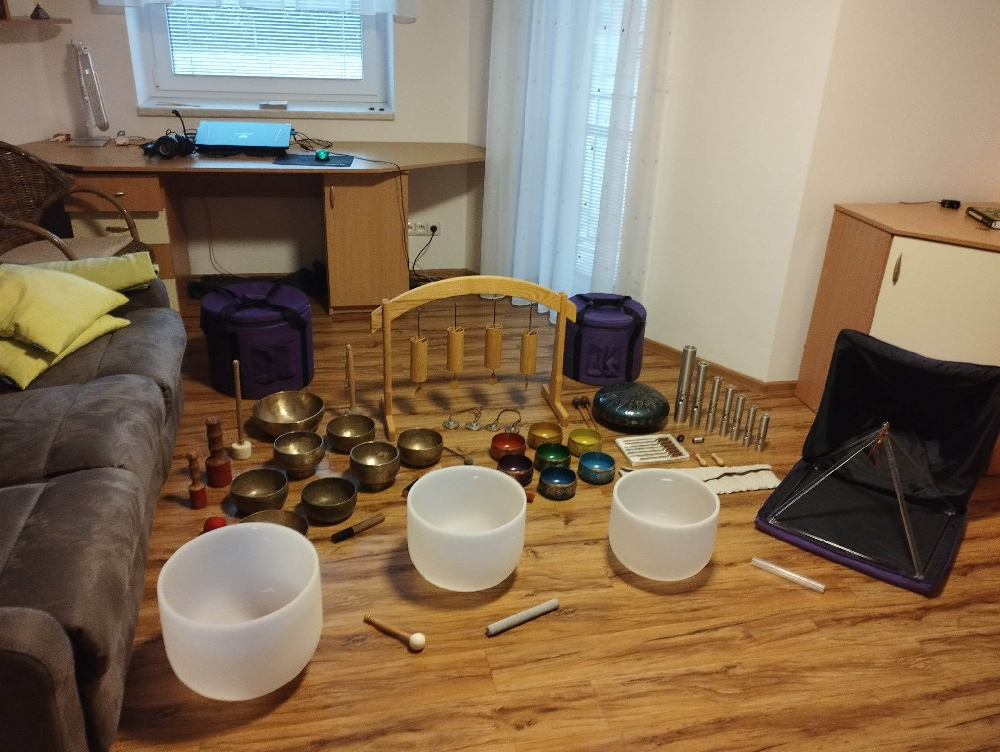

Terapeutické nástroje
Terapeutické nástroje jsou specifický druh hudebních nástrojů které slouží k relaxaci, uvolnění stresu po práci, meditaci, zvukovým terapiím atd... Na této stránce najdete několik druhů těchto vskutku zajímavých nástrojů a můžete si poslechnout i jednotlivé zvukové ukázky.

Co vám tyto nástroje mohou přinést?
- okouzlí vás zvukem a povznášejícími vibracemi.
- harmonizují vaše tělo i mysl
- pomohou k příjemné relaxaci po náročním dni
- využít je můžete i při hudební terapii, meditaci nebo léčení
- vypadají krásně i když se na ně jen díváte nebo je máte někde položené
- pomáhají nám soustředit se, zklidnit naši mysl, ulevit nám od stresu
a zmírnit příznaky deprese, únavy a úzkostných stavů.